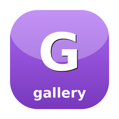

Poster grids & rails for media TUIs — virtualized PosterGrid, Rail carousel, PosterCard
Browse-row widgets for media terminal UIs: a 2-D virtualized PosterGrid for large libraries, a horizontal Rail carousel for browse rows, and a single PosterCard tile. The grid is sparse — it knows the total item count up front but holds only the cards that have been fetched, keyed by their absolute index, so a 50,000-item library renders as cheaply as a 50-item one; missing indices draw as skeletons and only the rows inside the viewport are ever rendered. Paging is owner-driven: after every cursor move the owner reads visibleRange() (the absolute-index window now on screen — the terminal analogue of the web grid's need-range event) and splices the covering page back in with withItems(). The widgets are renderer-agnostic: a card holds already-rendered poster bytes (produce them however you like, e.g. candy-mosaic), so this lib pulls in no image decoder. Original SugarCraft component — no 1:1 upstream; inspired by charmbracelet/bubbles' list/viewport and the phlix web media grid.
composer require sugarcraft/sugar-galleryuse SugarCraft\Gallery\PosterGrid;
use SugarCraft\Gallery\PosterCard;
$grid = PosterGrid::new(cardWidth: 16, posterHeight: 9)
->withViewport($cols, $rows)
->reset(total: 5000); // a fresh result set
// Keyboard nav (map your keys to these — all clamp + keep the cursor on screen):
$grid = $grid->right(); // ← → move within a row
$grid = $grid->down(); // ↑ ↓ move between rows
$grid = $grid->pageDown(); // PgUp / PgDn
$grid = $grid->home()->end(); // Home / End
$grid = $grid->moveTo(2600); // jump (e.g. an A–Z letter offset)After each move, read the visible window and fetch the page(s) covering it, then splice the results back in at their absolute index — the need-range pattern:
[$start, $end] = $grid->visibleRange(overscanRows: 1);
if ($start <= $end && $start !== $lastFetchedStart) {
// fetch items [$start, $end] from your API, build cards keyed by index…
$grid = $grid->withItems([$start => $card0, $start + 1 => $card1, /* … */]);
}
// Async poster arrived for one cell?
$grid = $grid->withItem($index, $card->withPoster($ansi));Render the visible rows (the cursor shows only when the grid is focused). Pass a candy-zone Manager to make each cell mouse-clickable — wrapped as zone id cell:<index>:
echo $grid->render(focused: true);
$frame = $grid->render(true, $zones);
$clean = $zones->scan($frame); // strip markers, record bounds
$zone = $zones->anyInBounds($mouseMsg); // → "cell:42"use SugarCraft\Gallery\Rail;
$rail = new Rail('Continue Watching', $cards);
$rail = $rail->moveCursor(+1, Rail::perRow($railWidth, $cardWidth));
echo $rail->render($railWidth, focused: true, cardWidth: 16, posterHeight: 9);use SugarCraft\Gallery\PosterCard;
$card = new PosterCard(id: '42', title: 'The Matrix', posterUrl: $url);
$card = $card->withPoster($renderedAnsi); // attach when the async render lands
$card = $card->withProgress(0.6); // optional continue-watching bar
echo $card->render(focused: true, width: 16, posterHeight: 9);total() up front but holds only fetched cards keyed by absolute index; indices with no card yet render as ░ skeleton placeholders.visibleRange(overscanRows) returns the absolute-index window on screen (with optional prefetch overscan) — the terminal analogue of the web grid's need-range event; the owner fetches and splices via withItems().left/right/up/down/pageUp/pageDown/home/end/moveTo all clamp into range and scroll the minimum needed to keep the cursor's row visible.cardWidth × (posterHeight + 2) box (reserving a title and a progress row), so columns and rows always line up regardless of which cards carry progress bars.Manager to render() and each real cell is wrapped as zone id cell:<index> for hit-testing — the caller scans the frame and resolves clicks.PosterCard holds already-rendered poster bytes (produce them however you like, e.g. candy-mosaic), so the lib pulls in no image decoder.moveTo() to an absolute offset, then page in whatever the visible window now covers.withItem() / withPoster() each tile as its render resolves.cell:<index> clicks back to items.Layout::joinHorizontal/joinVertical stitches cells, rows, and rails togethercell:<index>| Class | Method | Description |
|---|---|---|
| PosterGrid | new(int $cardWidth, int $posterHeight, int $hSpacing = 2, int $vSpacing = 1): self | A new empty grid with the given card geometry |
| PosterGrid | reset(int $total): self | Begin a fresh result set — drop cached cards, return the cursor to the top |
| PosterGrid | withTotal(int $total): self | Update the known total without dropping cards, clamping the cursor |
| PosterGrid | withItems(array $items): self | Splice a page of cards in at their absolute indices (new cards win) |
| PosterGrid | withItem(int $index, PosterCard $card): self | Set/replace a single card by absolute index (e.g. an async poster) |
| PosterGrid | withViewport(int $cols, int $rows): self | Resize the rendered area, re-clamping scroll to keep the cursor visible |
| PosterGrid | left/right/up/down(): self | Move the cursor one cell, clamped and kept on screen |
| PosterGrid | pageUp/pageDown(): self | Move the cursor one viewport of rows |
| PosterGrid | home/end(): self | Jump the cursor to the first / last item |
| PosterGrid | moveTo(int $index): self | Jump the cursor to an absolute index (e.g. an A–Z offset), clamped |
| PosterGrid | visibleRange(int $overscanRows = 0): array | The inclusive [start, end] absolute-index window on screen — the need-range; [0, -1] when empty |
| PosterGrid | columns/visibleRows/totalRows/cellHeight(): int | Derived geometry of the current layout |
| PosterGrid | total/loadedCount/cursorIndex/cursorRow/scrollRow(): int | Counts and cursor/scroll position accessors |
| PosterGrid | item(int $index): ?PosterCard | The card at an absolute index, or null when not loaded |
| PosterGrid | cursorCard(): ?PosterCard | The card under the cursor, or null |
| PosterGrid | isEmpty(): bool | Whether the grid has no items |
| PosterGrid | render(bool $focused = true, ?ZoneManager $zones = null): string | Render the visible rows; cursor shown only when focused; optional candy-zone cell marking |
| Rail | __construct(string $title, array $cards = [], int $cursor = 0, int $scroll = 0) | A horizontal carousel of PosterCards with a title, cursor, and scroll offset |
| Rail | withCards(array $cards): self | Replace the card list, clamping cursor/scroll into range |
| Rail | withCard(PosterCard $card): self | Replace a single card by id (e.g. when its poster finishes loading) |
| Rail | focusedCard(): ?PosterCard | The card under the cursor, or null |
| Rail | isEmpty(): bool | Whether the rail has no cards |
| Rail | moveCursor(int $delta, int $perRow): self | Move the cursor by $delta, scrolling so it stays visible |
| Rail | perRow(int $railWidth, int $cardWidth, int $spacing = 2): int | How many cards of $cardWidth fit in $railWidth at $spacing gap |
| Rail | render(int $railWidth, bool $focused, int $cardWidth, int $posterHeight, int $spacing = 2): string | Render the title plus the visible slice of cards |
| PosterCard | __construct(string $id, string $title, ?string $posterUrl = null, ?float $progress = null, ?string $poster = null) | One tile: poster area, title, and optional progress bar |
| PosterCard | withPoster(string $ansi): self | Attach the rendered ANSI poster (e.g. when an async render resolves) |
| PosterCard | withProgress(?float $progress): self | Set (or clear) the continue-watching progress bar |
| PosterCard | hasPoster(): bool | Whether a rendered poster is attached |
| PosterCard | render(bool $focused, int $width, int $posterHeight): string | Render a fixed-$width block: poster (or placeholder) rows, a title row, and a progress row when set |